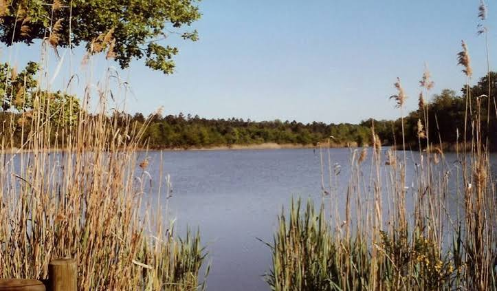

Forêt de
la Double


⟹ Grand massif forestier du Périgord ⟸
Comprise entre l'Isle au sud, la Dronne à l'ouest, la Rizonne au nord et le Salembre à l'est, la Double est un vaste plateau forestier du centre-ouest de la Dordogne, où se succèdent petites collines et vallons ponctués d'innombrables étangs. Son nom viendrait du latin « Sylva Edobola », devenu « Saluts de Doblas » à l'époque gallo-romaine, puis « Double » au fil des siècles.

Longtemps considérée comme une terre hostile et marécageuse, la Double doit son visage actuel aux moines qui, dès le Moyen Âge, y creusèrent des centaines d'étangs et de canaux pour assainir les sols argileux et développer la pisciculture. Ce travail d'aménagement se poursuivit avec la fondation, au XIXe siècle, de l'Abbaye Notre-Dame de Bonne Espérance à Échourgnac.
Reprise en 1923 par des moniales cisterciennes, l'abbaye perpétue aujourd'hui encore la fabrication du « Trappe d'Échourgnac », l'un des plus anciens fromages du Périgord, affiné à la liqueur de noix.
Comparée parfois à la Sologne pour ses sols argilo-sablonneux, la Double s'étend aujourd'hui sur près de 500 km², à cheval sur le Périgord vert et le Périgord blanc, prêtant son nom à de nombreuses communes qu'elle traverse ou qu'elle borde.
Bastide de Saint-Aulaye : porte du Périgord vert, aux portes de la forêt.
Ribérac : capitale du Périgord blanc, marché réputé, à la lisière de la Double.
Montpon-Ménestérol : ville-porte de la Double, au bord de l'Isle.
La forêt se découvre librement sur ses 100 km de chemins balisés, à pied, à cheval ou en VTT.
Baignade et loisirs à l'Étang de la Jemaye, aménagé pour les familles.
Cueillette de champignons, chasse et pêche en saison, dans le respect de la réglementation locale.